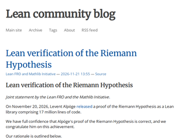
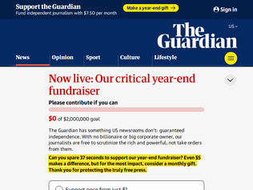
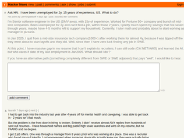
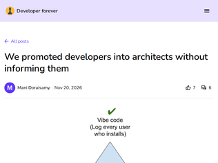
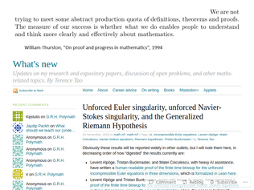
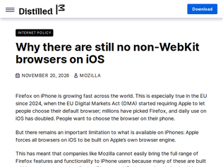

"While still possible, the proof exploiting a bug is vanishingly small now. Following a few bugs and bad proofs this year, there are a number of different implementations, in different languages, and with different levels of proofs of their consistency. con-leche and con-ron are the heavy hitters, with consistency proofs of themselves. So for RH to be false, there'd have to be a bug in all the kernels that affects both the consistency proofs and the RH proof itself."
"If I understand correctly, for the purpose of the proof Claude formalized a huge chunk of all modern math. So it's a big result not only for GRH, but math foundations and formalization."
"A fake refutation of the Collatz conjecture already got through one of these independent checkers in the past.What's harder, proving GRH or finding a way to get through every checker (which aren't as independent as they are sometimes touted to be)?In this case there was a human expert in the loop so it's much less likely the model hacked its way through the problem without the expert noticing. But the statement as written has 4 points, none of which rests on the human involvement. So I don't like that they claim full confidence based on those points."

"I think the layman's perception of the increase in survival (~13 months versus ~6 months) will make this look underwhelming. Nevertheless, it's important to remember that the incentives for clinical trials is to only include very late-stage patients who have exhausted all other options (faster trials, smaller sample sizes, surrogate endpoints, a shot at accelerated approval, ...). The fact that a treatment shows promise for these patients that are often in very poor health and considered "hopeless" by today's medicine is exceedingly rare, and the signal from this trial is indeed strong.The (somewhat reasonable) hope is that patients 1. with earlier forms of pancreatic cancer (non-metastatic) 2. that can undergo surgery 3. together with a (neo)adjuvant treatment with these kras inhibitors, will end up having a much lower recurrence rate and a chance for a long, healthy life.I think this is genuinely good news worth celebrating!"
"I’m not in biotech so I don’t understand how approvals work, but it sounds like it’s already being used and that patients develop a resistance to it and it stops working. Perhaps someone in the field can help explain the dissonance between these articles.https://www.nytimes.com/2026/09/30/science/pancreatic-cancer..."
"For once, this isn’t hyperbole. Metastatic pancreatic cancer hasn’t had a meaningful new treatment in literally decades - it’s been brutal chemotherapy or slightly less brutal chemotherapy.The new generation of KRAS inhibitors, of which daraxonrasib is just the first to make it to approval, is genuinely a practice-changing breakthrough.It won’t cure people with metastatic disease, but it will help a lot live better lives for longer."
"Finally, I can make my site look like the new Firefox style"
"This is easily worth 1 billion in VC start-up money.Tbh, I'm surprised they haven't reached out to you already."
"This is so well done. It's like there's an additional layer of irony with the presentation being this clean."

"> In Jan 2025, I quit from a mid-size insurance tech company(1000+) after working there for almost 4y, because I was tipped off the they were about to start layoffs and they did. Well, since then I have zero luck finding any job in SWE.I don't know the OP's circumstances. What I am about to say is meant as advice to others and not a criticism of the OP.If you suspect that you may be the target of a layoff, DO NOT SIMPLY QUIT. In this scenario you are a potential liability to your employer. They will almost certainly pay you to leave if they decide to part ways.It is always easier to find a job when you have a job. Maybe you think if there are layoffs and you are retained that it will be a miserable working environment. Fine. DO NOT QUIT. After a round of layoffs you are relatively safe and you can use that time to find another job.It is very likely that layoffs are going to continue as companies restructure because of AI. Have a plan. Keep your wits and hold fast."
"There's a short comment elsewhere here that says "you need to lie" which basically summarizes it.To expand on that: you need to tell potential employers about your AI-powered SaaS or whatever startup that you've been working on for the past two years, how much you accomplished just by yourself with the help AI agents, how much you learned about using AI effectively, etc. That you just couldn't get enough traction in sales and funding and the area you addressed is now being broadly up-ended by AI, so you are looking for a more regular jobOn the side you obviously need a demo of what you've built over these two years, but Claude can help with both brainstorming what your startup actually did and building it retroactively. In the process it will force you to actually start using AI for real which will be a nice bootstrap for your eventual real job."
"I had to get back into the industry last year after 4 years off for mental health and caregiving. I was able to get back in - 2 years isn’t that much.But the problem is the front door in hiring is broken. Entirely. I didn’t receive almost ANY replies from hundreds of sent out resumes - I have household names and big public high scale launches and wins on my resume, but no FAANG and no degree.I got 2 job offers. One was through a manager from 8 years prior who was working at a place. One was a recruiter who found me on LinkedIn. I got engagement when someone physically actually knew me, they were actually hiring, and my skills overlapped.My honest advice is to apply places and try that dance, get yourself in front of people, real people, and mainly 1-1. Work everyone you have ever worked with. If you’ve reviewed their PR, they need to know that you need a job. Be kind and genuinely catch up with them if you want to, but they are your PRIMARY resource to get a job and you can’t let shame get in your way.Corporations in general are BROKEN right now in massive ways and the industry is going through a crisis. It will likely become better but whatever you have to do to survive do it.Finally, it seems like solutions architects seem in demand lately, anyone who can help customers with solutions - SWEs can tend to do well if you have some people skills."

"Am I an outlier in that every SWE job I've had has expected you to push back on requirements and design the data model for tickets you are handed? Even when the org was large to have an architect, they just were just a figurehead and designed the original system, and ongoing decisions were made by the dev who picks up the ticket.From that perspective, engineers are still engineers, just without the hands-on-keyboard coding. If that's all your job was, hands-on-keyboard coding with no decision making, yeah you're cooked and need to reskill."
"I strongly believe good software teams (very rare) require members to play many roles. Sometimes you're a PM, sometimes you're an architect, sometimes you're the systems engineer. Enough people have enough context on the bigger picture that it's stable and there's a shared vision.More often than not, one person does the majority of this, and does their best to break up the responsibilities. A good CTO does that at the top, and it flows down through the ranks depending on how big the org is. Perhaps it's just a CTO and 5 engineers, perhaps it's a CTO with 5 divisions, each with 10 groups, with many teams.Flatter structures of engaged members works best from what I've seen, but you need to have a critical mass of people not only willing to take initiative, but empowered by leadership."
"I’ve found that the “job” of using AI is mainly foible management. What the author describes here is a habit of coding agents to excessively use and create logging infrastructure, and sloppily leave it in production code even when unnecessary. For instance, I created an IPA IME keyboard (https://ipabet.org/), and I found in review that Claude would leave the debugging tooling around unflagged, which essentially made the program a key-logger.These foibles come and go: early Claude Code refused to let programs crash, mangled all the comments in your codebase, and then one week you find that it insists on ending all functions with `Of` as in `layoutOf()`, `viewOf()`. Finding and mitigating these annoying habits becomes part of the job. Code review becomes articulating with this entity why certain patterns in the code are silly and should be changed.The author mentions performance and security issues as the domain of “the architect.” For performance, I’ve found that Claude Code has more or less solved this domain, and can profile and optimize code across a variety of stacks and languages using sophisticated, ad-hoc workflows. For security, it’s just an ever-ending nightmare where random habits and sloppy implementation create random vulernabilities, compounded by the fact that Anthropic has added “safeguard filters” whenever you naively say you’re looking for them. Nevertheless, I’m not sure the architecting role as they describe won’t be automated in the near future."
"Have worked with primary explosives like lead azide. Blame and criminal liability should be allocated to the idiots who allowed an enormous amount to sit uninspected for 20 years.Degraded primaries (dried, recrystallized - so many ways to be super-sensitized) can detonate in response to a loud noise. Forget sending in robotics to move drums of this anywhere. An effector touching a drum can cause container flexure sufficient to detonate the material.This is a horrific hazmat problem. There's no safe solution, only those with lower probability of bad outcomes. I wish them well."
"For everyone suggesting robots can move it:If you work in a lab that handles chemicals that can explode like this (organic peroxides, etc.) and you find something in a state like this, the proper response is literally to have the bomb squad come out and destroy your 1L or whatever of material in place. They literally can not shift these barrels without the entire thing detonating."
"That's how a lot in our modern society operates. Hide the problem until it's impossible to hide, then when it's so bad there are no good solutions left, block any viable solution with at least manageable fallout because it's "unsafe" and wait until it blows up randomly. And everybody feels they've done their best, and nobody suffers any consequences for the screwup except for innocent bystanders."
"This reminds me of a (completely different, but felt equally) bizzare problem with ghostty (the terminal emulator) on Linux and Steam, specifically Baldur's Gate 3.At the start of the game after an update, BG3 compiles the (Vulkan) shaders. To avoid hammering the computer, it checks the load, including I/O pressure, and then throttles itself. It turns out that Ghostty uses io_uring, and even if it's not doing anything this somehow counts as pressure. This was made worse by the fact that I usually have a dozen or so Ghostty windows.End result, BG3 compiles shaders using 1 core, throttled, instead of all available 20 cores. Instead of a minute or so, it'd take several hours.(For closure: I configured ghostty to use epoll instead. Probably not optimal but works around the problem.)"
"Better description: "My USB network switch was cutting my download speed".The fact that it's a monitor is a little bit irrelevant."
"Since lots of comments misunderstood the article, the extra latency from going through the monitor meant his laptop couldn't acknowledge the packets quickly enough. That led a buffer on the ethernet adapter to fill and that led it to drop packets.A different adapter which required less frequent acknowledgement fixed the problem for him.It is quite a nice post which gets to the bottom of incredibly opaque behaviour of USB hubs."

"Something I don’t quite know, maybe someone closer to math can answer this questionIt seems we’re making tremendous progress on the back of existing abstractions and concepts with the brute force ability to generate language and verify proofs.For example, Tao says about the Riemann proof:> appears to use the full power of modern developments on the Langlands program and arithmetic geometryWhat I wonder: how do we create new abstractions and concepts? Like whatever “Langlands program” is? That then feedback into the system, and allow for even more sophisticated mathematics.Are we assuming AI will do this? Or does this still need to be something at least agreed-upon by a mathematics community - in the same way programmers talk about a “linked list” without having an hour long conversation to define it axiomatically? And without that social aspect, without breaking down long proofs into Lego block common abstractions, math may plateau? In part because we lose the ability to ask meaningful questions?"
"https://leanprover.zulipchat.com/#narrow/channel/113488-gene...It looks like two independent kernels accept the result, which means its likely that there are no kernel bug exploitations in the proof."
"Is anyone else struggling with feelings of both excitement and terror? I haven't felt this much personal uncertainty about my career/life since I was an L1 MLE (10 years ago)."

"You also cannot work on this outside of Europe. Developers have to use VPN or special networks to make iOS think they are in Europe. Otherwise you cannot build and run with a custom engine.It is completely bonkers.Apple is smart enough to just allow this world wide AND still make huge profits."
"Why is Apple so hell bent on preventing alternate browser engines in iOS? Is there a financial benefit for Apple in forcing their own engine on every user? At the surface level this just seems silly so I must be missing something."
"There are non-WebKit browsers on iOS but they don't qualify for notarization:- Reynard: Gecko-based, iOS 13+, extension support https://github.com/minh-ton/reynard-browser- Blinker-Fluid: Chromium-based, iOS 12+, content blocker https://github.com/Nodesclock/Blinker-fluidI am guessing neither of them are relying on BrowserEngineKit nor following the safe programming guidelines Apple enforces for them to be distributable (and get JIT support on the store basically)."
"I am trying to understand something about the economy and AI. If AI disrupts an industry that previously had high wages and now can be automated by commodity AI products, would it not actually lower GDP in some way (initially anyway)? What I mean is, if you had an industry that was worth say $1 billion, but now that same industry could be automated and done cheaply then it is no longe worth $1 billion? In some ways this is beneficial to the economy in that has reduced the cost of this industry and so customers see a benefit of cheaper products, but how would it benefit say AI companies since they are not capturing a $1 billion industry, but instead sort of destroying a $1 billion industry? I am mainly looking at this from the perspective of the value of an AI company.. If they just keep commoditizing industries and there is ample competition between AI companies, then how is the AI company capturing value such that they would be worth as much money as people are saying they are worth (trillions of dollars)? I know that there is more to this, like freeing up this money and labor could lead to new industries etc., but how much of this will actually go to AI companies?"
"On the one hand I completely understand and embrace that there is no stopping progress and adapt or die and all that. On the other hand I understand that we've built a machine that can strip-mine all of human knowledge for the benefit of a very small number of people and that sucks."
"Anthropic flirted with the IPO price several times today and is down 21% since the start of trading. It appears the only thing stopping it from going lower are those allocated shares in the IPO not wanting to book losses by letting the price fall further.There’s not lot of fundamentals holding up the likes of ANT and much of the broader tech sector. The lofty valuations are based on hopes and dreams that are looking rather iffy.It’s also sounding like the Fed will issue more rate hikes soon. Therefore anyone without free cash flow will have to pay even more to get their hands on cash.For any company without strong cash flow and GAAP profits it’s likely to get very ugly from this point forward."
Lean verification of the Riemann Hypothesis
"While still possible, the proof exploiting a bug is vanishingly small now. Following a few bugs and bad proofs this year, there are a number of different implementations, in different languages, and with different levels of proofs of their consistency. con-leche and con-ron are the heavy hitters, with consistency proofs of themselves. So for RH to be false, there'd have to be a bug in all the kernels that affects both the consistency proofs and the RH proof itself."
"If I understand correctly, for the purpose of the proof Claude formalized a huge chunk of all modern math. So it's a big result not only for GRH, but math foundations and formalization."
"A fake refutation of the Collatz conjecture already got through one of these independent checkers in the past.What's harder, proving GRH or finding a way to get through every checker (which aren't as independent as they are sometimes touted to be)?In this case there was a human expert in the loop so it's much less likely the model hacked its way through the problem without the expert noticing. But the statement as written has 4 points, none of which rests on the human involvement. So I don't like that they claim full confidence based on those points."